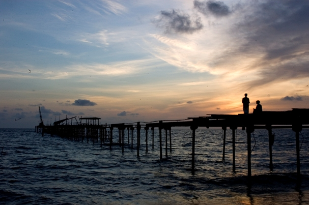
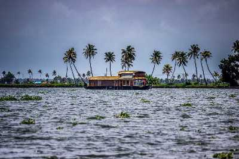
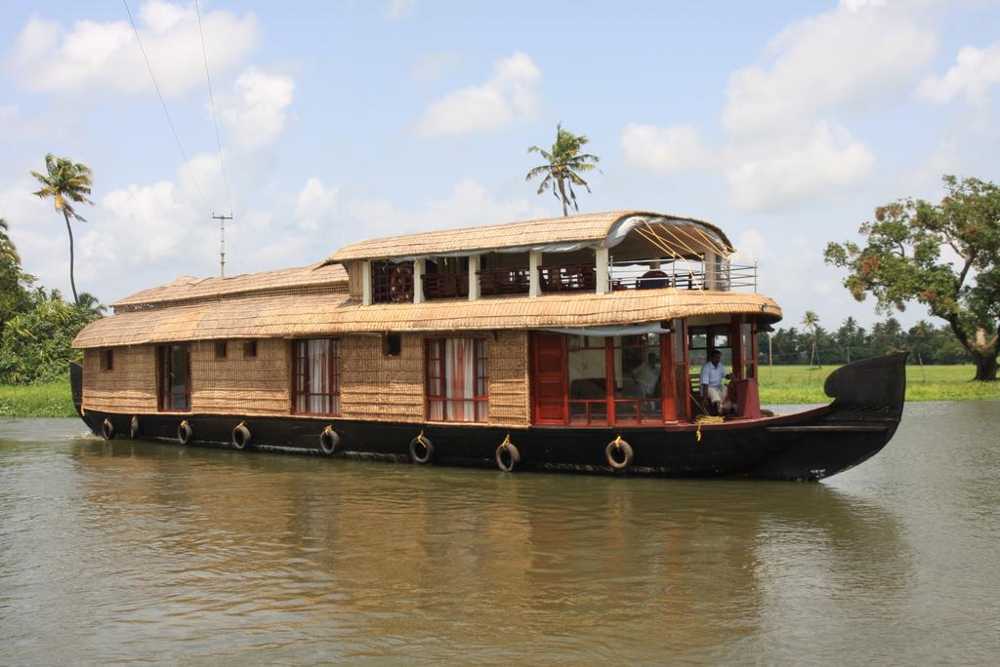
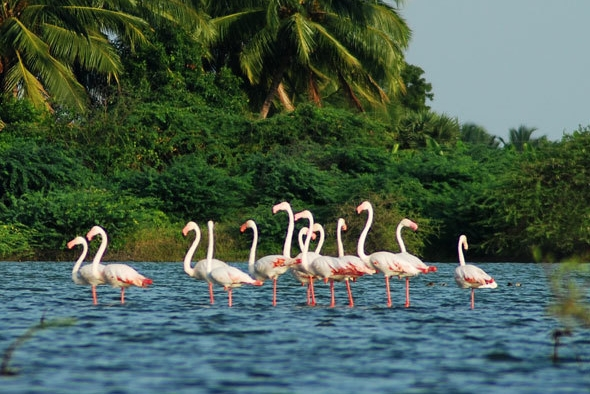
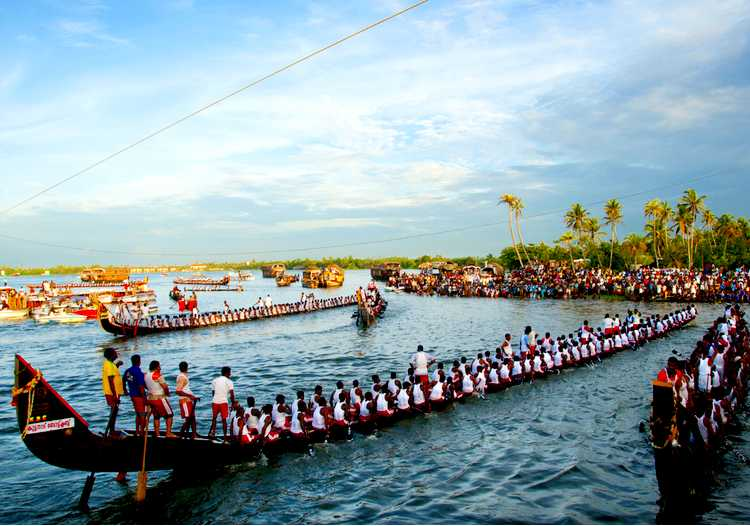
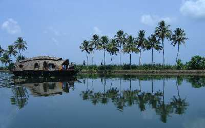

ALLEPPEY BEACH
Alappuzha is referred to as the Venice of the East which has always enjoyed an important place in the maritime history of Kerala. Presently it is famous for its boat races, backwater holidays, beaches, marine products and coir industry. Alappuzha beach is a popular picnic spot. The pier, which extends into the sea here, is over 137 years old. Entertainment facilities at the Vijaya Beach Park add to the attraction of the beach. There is also an old lighthouse nearby which plays a fascinating sight to the visitors from far and wide.

BACK WATERS IN ALLEPPEY
Formed by the amalgamation of multiple of various waters sources, backwaters give you the postcard-perfect view with coconut trees lined all along and houseboats in the middle.

HOUSE BOAT
Popularly known as the Venice of the east, Alleppey or Allapuzha is famous for its serene backwaters and their exceptionally scenic setting. Cruising on houseboats in Alleppey is the latest and probably the best addition to the list of ways you can enjoy the mesmerizing natural beauty of this quaint little town. Alleppey is gifted with a unique crisscrossing network of canals that runs throughout the town which allows you to access and explore the entire area while you're relaxing on your houseboat.

KUMARAKOM BIRD SANCTUARY
An ideal place for bird''s lovers, this bird sanctuary spreads over an expanse of 14 acres. It serves as a home to several rare species of homing and migratory birds.

NEHRU TROPHY BOAT RACE
This snake boat race festival is an annual event held here on the second Saturday of every August.

VEMBANAD LAKE
Vembanad Lake is the longest lake in India. The lake is known by different names in different places. Taking a house boat on the lake could be a fun experience.